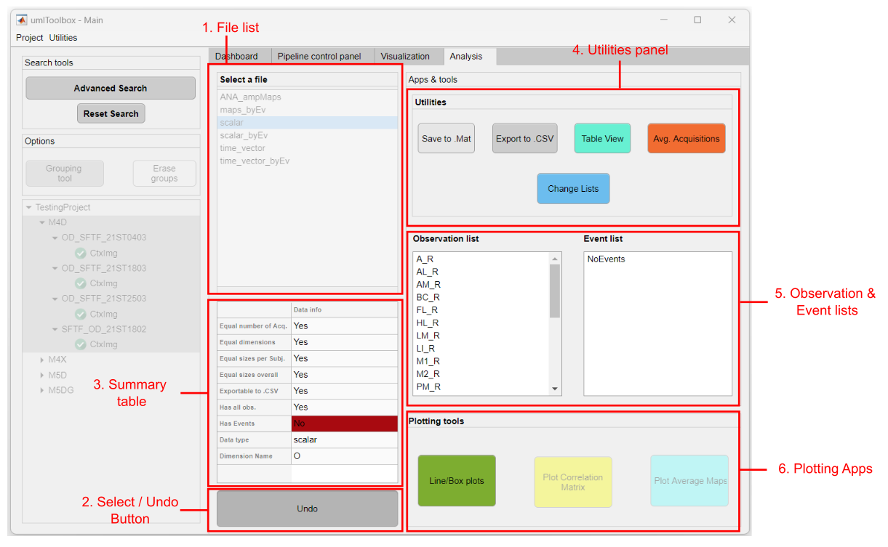

This tab is dedicated to the visualization and analysis of grouped data. The data used in this tab consist of the .mat files generated by the Analysis functions of umIT.
Tip
To get started, go directly the section How to select data for analysis!

Main components of the Analysis tab.
List of .mat files located in the folders of the selected objects.
Click on "Select" to load the data from the selected file from the File list and access the Apps & Tools panel. To Select a new set of data, click on "Undo" and start over.
This table gives an overview of some features of the selected data. For instance, it shows if the selected data has equal dimensions, if it is exportable to .CSV and it's data type and dimension names. These features will determine the availability of some tools from the Apps & Tools panel.
Note
This table is updated only when the Select button is pressed. Thus, it describes the "original" data. This means that the table is not updated after changes on the data using the utilities tools (e.g. Avg Acquisitions or Change Lists).
In this panel, there are options to export the data outside umIT as well as to merge acquisitions and create subsets of observations and/or events. Here is the list of available options (click on the links for further details):
Here, the list of unique values of observations and/or events are shown. The elements in these lists will be those to be used by the utilities and plotting tools. To rearrange and/or subset these lists, use the Change lists tool.
The panel contains options to create and manage groups.
This button launches the Data grouping tool. This tool allows the segregation of the elements from the object tree into two or more groups.
Click here for more info about how to use the Data grouping tool!
Click here, to erase the groups created using the Data grouping tool and restore the object tree to the original list.